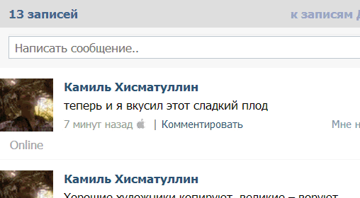

Ты наверно замечал, что счастливые обладатели устройств Apple могут публиковать записи с иконочкой яблочка. Такие записи обычно собирают много лайков и комментариев, а символ яблочка выступает показателем престижности и крутости автора. Но что, если человек не желает покупать устройство за овер 20 кусков, но хочет выглядеть круче?
Мы постарались исправить эту несправедливость!
На понтах™ - это расширение для браузера Chrome, позволяющее писать в социальной сети ВКонтакте записи помеченные яблочком!
-
Установка
Установи расширение прямо с этого сайта или из интернет-магазина Chrome.
-
Использование
Заходи в вк, придумай что-нибудь умное или сделай гламурную фоточку и отправляй всё это добро к себе на стенку. До того как нажать на кнопочку "Отправить", убедись в том, что иконка яблочка рядом с этой кнопкой светится, а если она серая, то просто нажми на неё.
-
Что дальше
Наслаждайся эффектом. Теперь твои записи и фотки будут "лайкать" чаще и у тебя появится много новых друзей, ведь для них ты - крутой чел с айфоном и пофиг на то, что его никто не видел, главное что ты публикуешь свои записи с яблочком!
Copyright © 2013 Kamil Hismatullin. Site design inspired by Apple in California. Assembled in Russia.